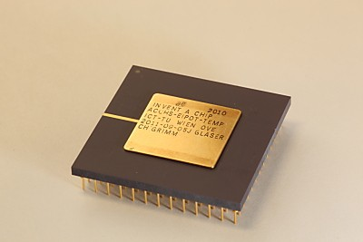
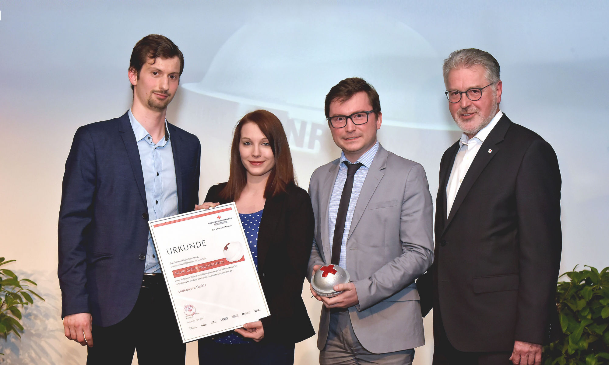
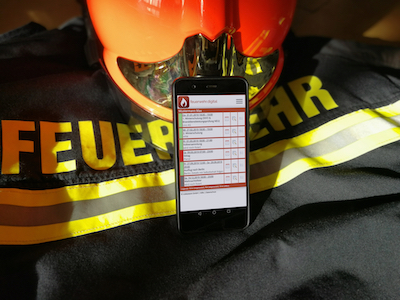

Volunteer firefighter at a local fire department in Linz, Austria
 Image: APA/Georg Blemenschlitz/TU Wien
An Austrian microchip design contest. An energy-saving chip was designed in a team, which won the contest. The chip was called “EIPOT - Enhanced Integrated Power-Off Timer”.
Elektrotechnik und Elektronik (Electrical Engineering)
Elektrotechnik und Informationstechnik (Electrical Engineering)
For his support during the flood in Austria in 2013 as a volunteer (firefighter) for more than 20 hours
Web Development, Software Development, Firmware Development, Mobile Development
Web Development, Software Development, Firmware Development, Mobile Development, Online Marketing, Social Media Marketing, SEO, SEA, Social Recruiting, Employer Branding, Consulting

For a volunteer-friendly company and being a “Digital Volunteer”

Goal of the app is, to support fire departments in organizing their events like trainings and schoolings. It's already used by several chosen fire departments for many years – now it can be used by all others too.